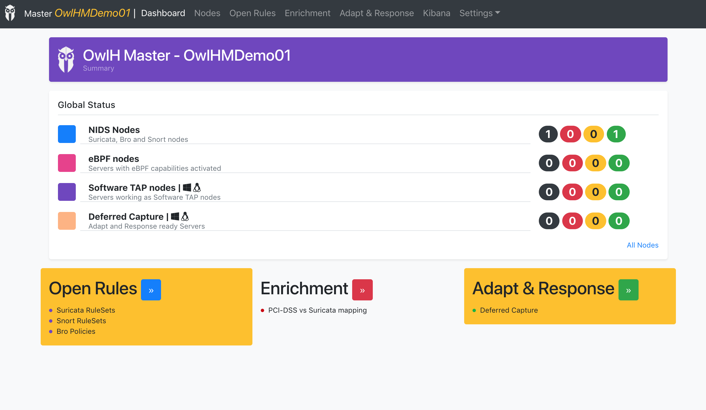

Why OwlH? Why a Network IDS will be great?
A Network Intrusion Detection System (NIDS) will help to detect in real time, malicious attacks from external systems, or Infections of internal servers or user workstations, or wrong services configuration, or may be local security policies breaches. Among standard detection capabilities, a network IDS will allow detecting:
- New systems in the network
- Hidden systems that are using spoofing
- Use of not allowed services
There is also a Prevention mode, running in Intrusion Prevention System (IPS) mode a Network IDS may also act by stopping, blocking or discarding a bad connection as soon as it is detected.
Nowadays, It is easy to see the value of a solution that can detect and prevent malicious activities, but it is also true that these capabilities will require the right configuration and tunning to be really useful.
OwlH is an open source project that will help you to deploy the right Network Intrusion Detection System in your environment, do the right configuration and keep it updated and adapted to your network reality that, as you know, will change constantly.
Let’s summarize a few great Network IDS capabilities
Network IDS capabilities
Based on rules or policies, a network IDS will be able to detect two kinds of problems: Global problems, and particular problems.
Global problems: are those that affect everyone around the world. thinks like Malware, APT, Phishing and others
Particular problems: are the ones specific to your business, those will require NIDS adaptability and customization, to defend by learning about how your business works
Being able to visualize the use of your network.
How it works?
1.- Choose and deploy the best of bread Open Source NIDS solution
OwlH supports mostly high performance open source network IDS processors
By default an OwlH based NIDS probe will use Suricata and Bro IDS in the same box
2.- Configure and fine tune as your network environment requires
depending on your environment, you will need to monitor different scenarios. Maybe you have some cloud services, also you may have a DC with servers as well as have to monitor your distributed environment. You will need to define your detection capabilities depending on your business requirements.
3.- Single pane of glass with Wazuh
Collected alerts and added value information is integrated with your Wazuh platform providing a single pane of glass to help you analyze the behavior of your network, detect, adapt and react
Network IDS Added Value
Network Thread Detection
by using network IDS rulesets this will allow you to detect most common attacks and malicious network behavior. Vendors will update rulesets periodically and OwlH will help you to keep your current rulesets synchronized with your NIDS
+50.000 rules (free and commercial)
Daily updates
Customizable Rulesets
Support for Multiple environments and platforms
Mix all them as you need
OwlH will help to monitor your network where ever it is working. We have solutions to collect traffic in environments etereogenicos as
OwlH supports different configuration scenarios that can work together
For cloud or isolated systems. Make your servers part of the network analysis process, collect traffic locally on your server and forward it to a central NIDS for analysis.
- Virtual Environment
- On-Premises
For on-premises virtual platforms. Do not lose traffic between your virtual appliance like VMWARE based ones. you can listen that traffic and keep it monitored
Listening traffic directly from your network. Mostly it is the typical deployment, configure your NIDS probes to listen a portMirror or portSpan interface in your network
Compliance Mapping - PCI-DSS v3.2.1
Identify which PCI-DSS controls that are impacted because your network traffic.
OwlH has the map between Suricata based ruleset and PCI-DSS controls, that will provide visibility about what Network IDS alerts impact to which PCI-DSS controls.

Adapt and Response
Define your thread trigger action, collect thread related information and analyze it with your NIDS or by using pcap tools
Open Rules. Keep your rulesets and policies up-to-date
Keep your rulesets and policies up to date and tuned to guarantee your detection capabilities
Let's put it all together
Orchestration - NIDS Live-cycle centralized management
Do you need help?
OwlH’s professional help can help you to be successful
- Vendor level - deployment, first configuration and support
- the mechanic level - operation help to keep platform tunned, clean and updated